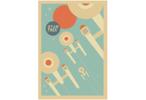

The past is written, but the future is left for us to write.
 CULTURAL WORLD
BUILDINGUtilizing ethnographic research to design fictional
societies with realistic social hierarchies, belief systems, and material cultures.
CULTURAL WORLD
BUILDINGUtilizing ethnographic research to design fictional
societies with realistic social hierarchies, belief systems, and material cultures. NARRATIVE
ANALYSISUtilizing an anthropological lens to deconstruct
professional novels and scripts—breaking down how cultural rituals, social structures, and kinship
ties are used to ground fictional storytelling.
NARRATIVE
ANALYSISUtilizing an anthropological lens to deconstruct
professional novels and scripts—breaking down how cultural rituals, social structures, and kinship
ties are used to ground fictional storytelling. CREATIVE
DOCUMENATIONA collection of original story bibles and narrative
design artifacts—ranging from drafted novel chapters and poetry to structured game design documents
(GDDs) that map out branching dialogue, quest flows, and immersive lore systems.
CREATIVE
DOCUMENATIONA collection of original story bibles and narrative
design artifacts—ranging from drafted novel chapters and poetry to structured game design documents
(GDDs) that map out branching dialogue, quest flows, and immersive lore systems. PLAYER
PSYCHOLOGYApplying an anthropological understanding of human
behavior to craft choices and branching paths that resonate emotionally with the player.
PLAYER
PSYCHOLOGYApplying an anthropological understanding of human
behavior to craft choices and branching paths that resonate emotionally with the player. ARIZONA STATE UNIVERSITY | TEMPE, AZ
ARIZONA STATE UNIVERSITY | TEMPE, AZBACHELOR OF ARTS IN MEDIA ARTS AND SCIENCE [IN PROGRESS]
NORTH SEATTLE COLLEGE | SEATTLE, WAASSOCIATE OF ARTS IN ANTHROPOLOGY | 2025 | GRADUATED WITH HONORS

 Dune
Dune Tolkien Series
Tolkien Series
 Baulder's Gate 3
Baulder's Gate 3 Halo Master Cheif Collection
Halo Master Cheif Collection Runescape
Runescape
 Star Trek Series: TOS & TNG
Star Trek Series: TOS & TNGWe all make choices in life, but in the end, our choices make us.